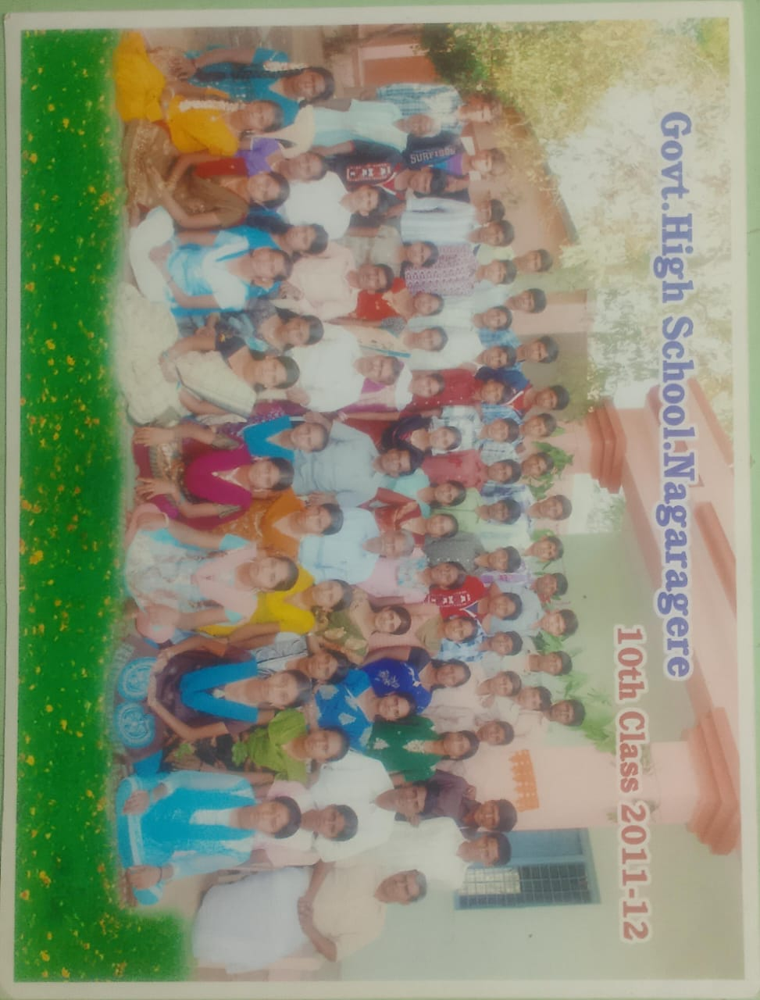
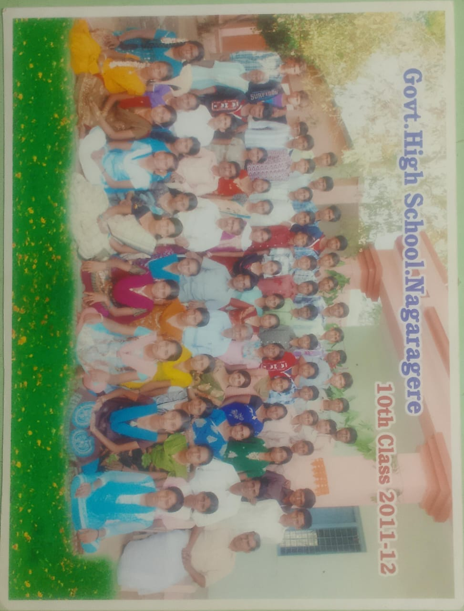

📸 Unforgettable Memories
me also unpredictable.. because! you don't know.. my next move..
From bunking classes to sharing tiffins, these moments live forever in our hearts.
ನಮ್ಮ ನಗರಗರೆ ಸರ್ಕಾರಿ ಹೈಸ್ಕೂಲ್…
ಅಲ್ಲಿ ಕಳೆದ ದಿನಗಳು ಒಮ್ಮೆ ಬಂದು ಹೋಗಿದೆಯೆಂದು ಕಂಡರೂ,
ಹೃದಯದಲ್ಲಿ ಸದಾ ಉಳಿದಿರುವ ಅವಿನಾಭಾವ ನೆನಪುಗಳು.
ಪ್ರತಿ ಬೆಳಗ್ಗೆ ಜೇನುಹುಳಿಯ ಶಬ್ದದಂತಿತ್ತು ಶಾಲೆಯ ಗದ್ದಲ…
ಮಕ್ಕಳ ಹಳ್ಳಿಗೆ ಮುದ್ದಾದ ನಗು, ಶಿಕ್ಷಕರ ದಪ್ಪ ಆದರ್ಶಗಳು –
ಇವೆಲ್ಲವೂ ಇನ್ನೂ ಕಿವಿಗೆ ಕೇಳಿಸುತ್ತಿವೆ.
ಸ್ನೇಹಿತರ ಜೊತೆ ತಿನ್ನುವ ಟಿಫಿನ್,
ಶಿಕ್ಷಕರ ತರಗತಿಯ ಕಠಿಣತೆಯ ಮಧ್ಯೆ ಪುಟ್ಟ ಹಾಸ್ಯ,
ಪದವಿ ಪರೀಕ್ಷೆಗೆ ಮೊದಲಬಾರಿಗೆ ಬೆದರುವ ಕ್ಷಣ,
ಅದೆಲ್ಲವೂ ಬದುಕಿನ ಶ್ರೇಷ್ಠ ಅಧ್ಯಾಯವಾಗಿ ಉಳಿದಿವೆ.
**ಅಲ್ಲಿದೆ ನಮ್ಮ ಬೆಳೆದ ಮೊದಲ ಹೆಜ್ಜೆ…!**
ಅಲ್ಲಿ ಕಂಡ ಮೊದಲ ಕನಸು…!
ಅಲ್ಲಿ ಬೆಳೆದ ಸ್ನೇಹ, ಇನ್ನಿಗೂ ಮಾಸದೆ ನನ್ನ ಜೊತೆಗಿದೆ…
ನಮ್ಮ ಶಾಲೆಯ ಆಟದ ಮೈದಾನ, ಕಲಿತ ಕೋಣೆಗಳು, ಹಸಿ ನೆಲದ ಸುಗಂಧ…
ಇವೆಲ್ಲವೂ ಬಿಟ್ಟು ಬಂದೆವು ಆದರೆ ಮರೆಯಲಾರೆವು.
**ಸ್ನೇಹ, ಶಿಕ್ಷೆ, ನಗು, ಅಳಿಕೆ – ಎಲ್ಲಕ್ಕೂ ಸಾಕ್ಷಿಯಾದ
ನಮ್ಮ Government High School, Nagaragere.**
ಎಂದೆಂದಿಗೂ ನನ್ನ ಹೃದಯದ ಭಾಗವೇ… 💙


 

🤭oorige bandiroru neerige barade irthareye?
hage....
🤭 website create maadonu.. application create maadade irthinaa..? , games create maadade irthinaaa...?
babu reddy😎 unpredictable anthey thaaggedeley
Welcome Back to Memory Lane! ❤️
Revisit those golden days of our school life, share memories, play games, watch videos, and chat with old friends. ನಾನೊಬ್ಬ ತಿರುಕನು ನಾನು ಕಂಡನೆ ಕನಸನು. ghs ngr ಗೆಟ್-ಟುಗೆದರ್ ಆಗುತ್ತೆಂದು. ಅದು ಅವ್ವದಯ್ಯ.. ಆನಿ ಲೇಟ್ ಗ ತೆಲುಸು ಕುನ್ನಾ